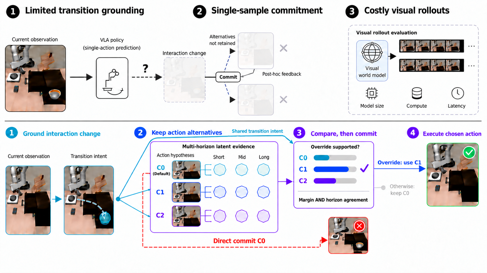
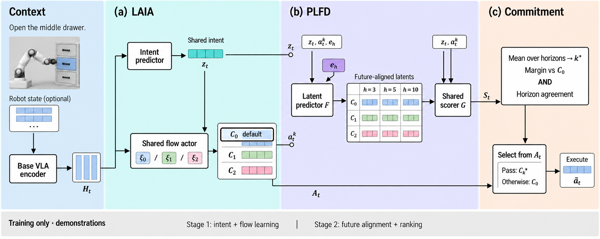

One-shot commitment
从当前上下文直接保留一个动作实现，缺少对短期交互变化和备选结果的执行前比较。
INTENT-GROUNDED LATENT FUTURES
面向 Vision-Language-Action Policies，在执行前保留同一流策略生成的多个动作候选，并用共享 transition intent 与多时间尺度、未来对齐的潜在证据完成比较。
THE PRE-COMMITMENT GAP
从当前上下文直接保留一个动作实现，缺少对短期交互变化和备选结果的执行前比较。
用共享 transition intent 组织多个 actor-consistent 候选，再用未来对齐证据比较后承诺执行。

论文将问题拆成 transition grounding、single-sample commitment 与 costly visual rollouts 三个瓶颈。
INTENTDELIB-VLA / PAPER MECHANISM
从当前 task-conditioned context 预测短期 interaction change，并同时约束候选生成与比较。
LAIA 保留同一 flow actor 的多个候选，PLFD 将候选映射到多时间尺度、未来对齐的潜在表示。
只有在候选优势充分且跨时间尺度证据一致时，才替换默认动作。

推理时只使用当前上下文、预测 intent、actor candidates 与 PLFD evidence；示范未来观测仅作为训练锚点。